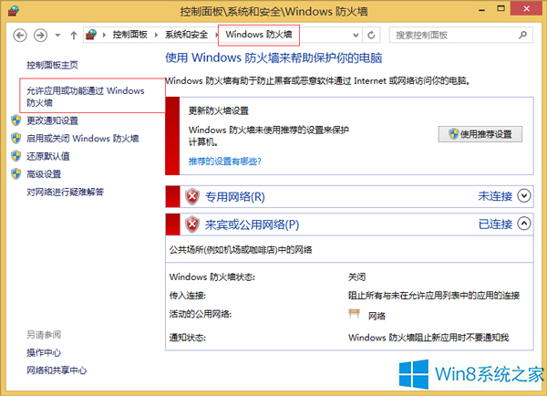
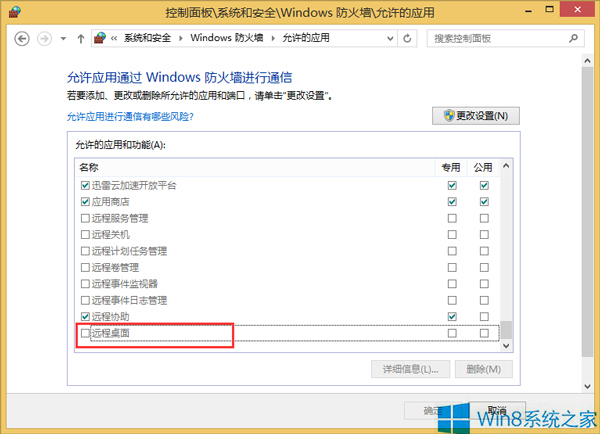
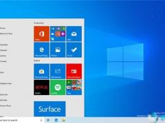
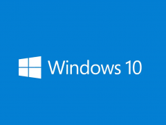

解除win10防火墙对远程桌面限制的操作方法
时间：2019-02-14 来源： Win10下载官网 游览量： 8412次
我们都知道系统里有一个名叫远程桌面的功能，这个功能一般的用户可能平时用的不多，而对于一些特殊职业，特殊的用户来说会经常的用户到，你比如说外资企业员工或者有web服务器的公司员工，就是如此，不过有用户也会遇到一些不愉快的事情，例如win10远程桌面被防火墙限制，这该怎么解决呢？下面小编就向大家简单的介绍一下win10防火墙去掉对远程桌面的限制的方法，希望可以帮助大家。
许多时候系统下的某些操作没有法进行就是被防火墙禁用了，比如远程桌面，为了让远程桌面顺利进行，就要解除防火墙的相关限制，那么win10系统怎么去除防火墙对远程桌面的限制呢？下面就和小编一起来看看吧。
解除win10防火墙对远程桌面限制的操作方法：
一、点击控制面板，接着在控制面板上找到“系统”-“安全”-“防火墙”-“允许应用或功能通过windows防火墙”项。

二、然后进行更改，在跳出的界面上，选中“远程桌面”，将包括远程的所有项全部勾选。

三、勾选完毕后，再打开确定按钮保存，便可退出。
以上介绍的内容就是关于解除win10防火墙对远程桌面限制的具体操作步骤，不知道大家学会了没有，如果你的某些程序没有法使用，不妨看看是不被防火墙限制了。有需要的朋友可以参考一下小编介绍的方法，过程很简单，希望大家会喜欢，谢谢！！！了解更多的教程资讯亲关注我们系统天地网站~~~
下一篇：更改电脑屏幕锁屏时间方法
系统之家教程排行
最新Win10系统下载
-  雨林木风Win10专业版下载1909 64位V2020.02 2020-02-20 人气：7917
- 雨林木风Win10专业版下载1909 32位V2020.02 2020-02-20 人气：7704
- 深度技术Win10专业版2004 ISO镜像 64位 V2020.02 2020-02-18 人气：7828
-
32位") win10专业版ISO镜像_win10官方下载(1909)32位 2020-02-17 人气：7884
win10专业版ISO镜像_win10官方下载(1909)32位 2020-02-17 人气：7884
-
64位") win10专业版ISO镜像_win10官方下载(1909)64位 2020-02-17 人气：7197
win10专业版ISO镜像_win10官方下载(1909)64位 2020-02-17 人气：7197
- Msdn 2020春季 Win10专业版ISO镜像更新 X32 2020-02-14 人气：7186
-  Msdn 2020春季 Win10专业版ISO镜像更新 X64 2020-02-14 人气：7719
- Win10下载官网_2020 Win10专业版2月更新 X64 2020-02-14 人气：7268
 川公网安备 51130402000046号
川公网安备 51130402000046号